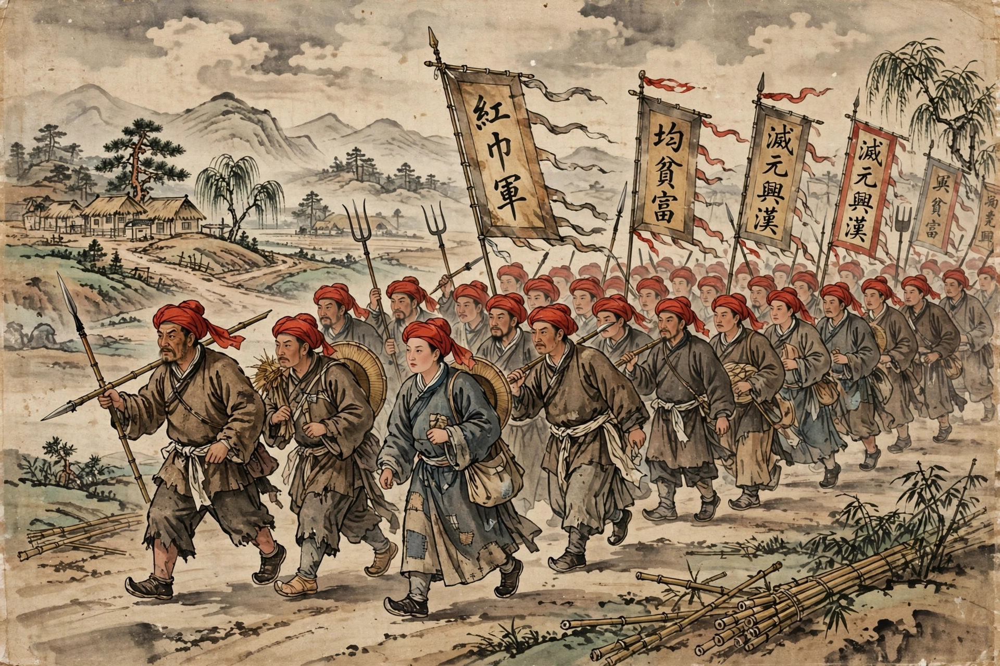

The Red Turban Rebellions (紅巾起義) were a series of uprisings against the Mongol-led Yuan dynasty of China that began in 1351 and culminated in the dynasty's collapse and the founding of the Ming dynasty in 1368. The rebels wore red turbans and sashes to identify themselves, and many were inspired by the millenarian White Lotus movement, which prophesied the coming of Maitreya Buddha and the "King of Light".
 | |
| Date | 1351 – 1368 |
|---|---|
| Location | Yuan China |
| Result | Overthrow of the Yuan dynasty; founding of the Ming dynasty |
Decades of flooding of the Yellow River, famine, plague, runaway paper-money inflation and corrupt, faction-ridden government eroded Yuan legitimacy. In 1351 the court conscripted some 150,000 labourers to re-channel the Yellow River; among them, White Lotus leaders Han Shantong and Liu Futong launched a revolt, proclaiming Han a descendant of the Song imperial house. Rebels rose across the Huai and Yangtze valleys.
The movement soon fragmented into regional warlord states. Liu Futong's Song regime held the north briefly before being destroyed. In the Yangtze valley, Xu Shouhui founded Tianwan; his general Chen Youliang murdered him and proclaimed the state of Han. Zhang Shicheng seized Suzhou and the rich lower Yangtze. The eventual victor was Zhu Yuanzhang, a former novice monk and beggar who joined the Red Turbans in 1352, took Nanjing in 1356, destroyed Chen Youliang at the Battle of Lake Poyang (1363) and Zhang Shicheng (1367), then sent his armies north to expel the Yuan court from Khanbaliq (Beijing) in 1368.
The rebellions ended nearly a century of Mongol rule over China proper and established the Han-Chinese Ming dynasty, which ruled until 1644. Zhu Yuanzhang, as the Hongwu Emperor, built a highly centralised agrarian state informed by his suspicion of the secret-society networks that had raised him to power.
From Wikipedia, the free encyclopedia.